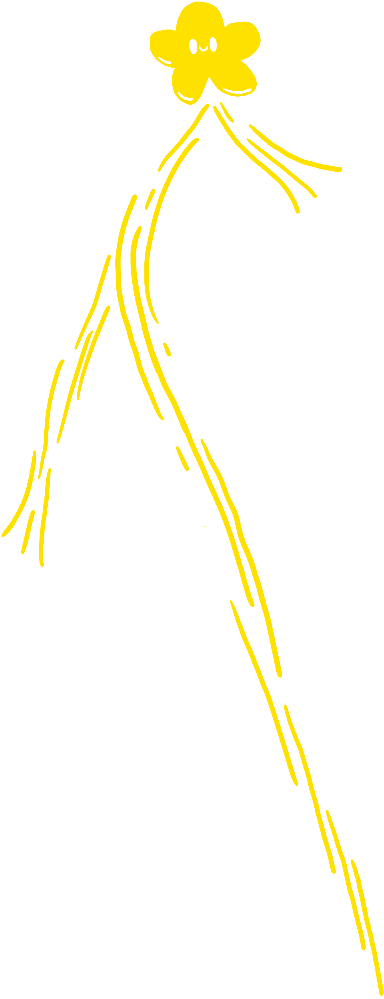
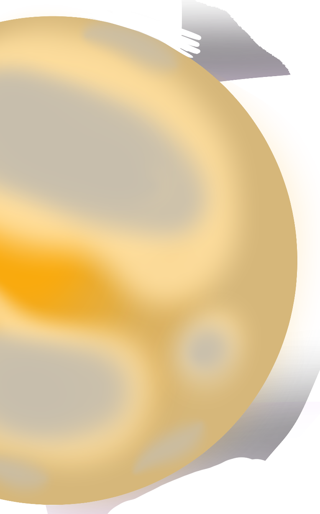
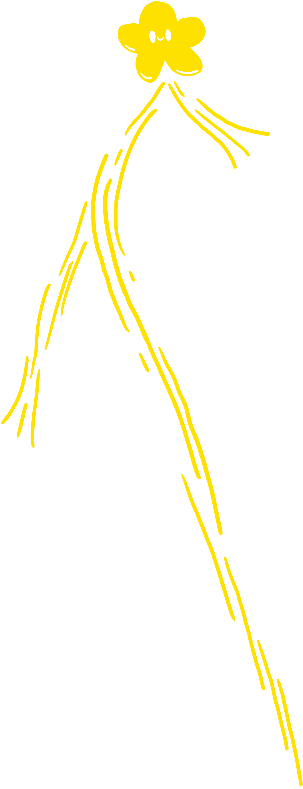
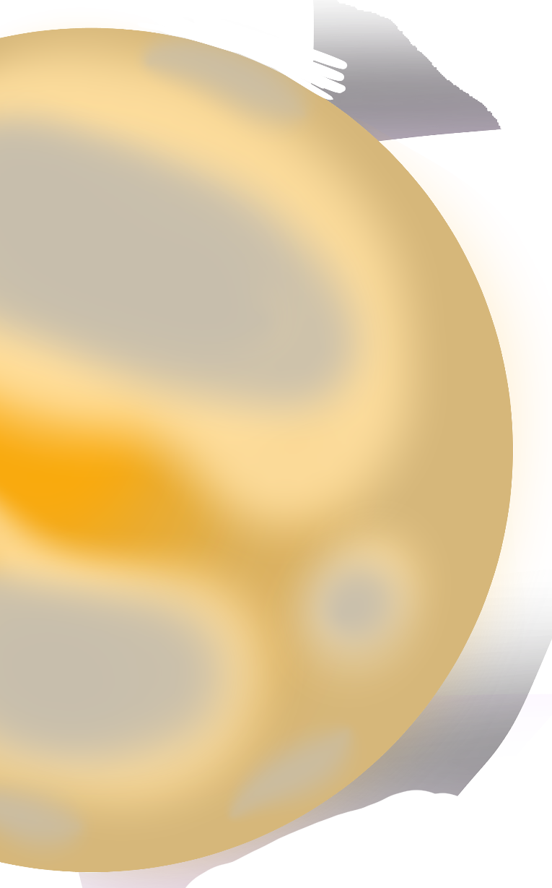

MON PARCOURS
 




BUT Informatique appliqué à
l'imagerie numérique (2022-2024)
Après mon baccalauréat, il me fallait trouver des
études correspondant à ma future profession. J’ai
alors découvert l’IUT du Puy-en-Velay comme étant
le seul établissement en France à proposer
publiquement un BUT d’informatique tourné vers
l’imagerie numérique. On y apprend à programmer
sur des projets très visuels et graphiques et il y a
même des cours de modélisation 3D ! Ni une ni deux,
je déménage au Puy-en-Velay après
avoir été rapidement accepté pour cette formation.
Baccalauréat STI2D Option
(Obtenu en 2022)
Lors de mon année de 3e, au collège, je savais ce
que je voulais faire : Développer de jeu vidéo. Je
voyais déjà le code comme le squelette du jeu.
C’est lui qui donne vie et qui rassemble tous les
autres éléments dont a besoin le jeu. Voilà
pourquoi j’ai choisi un cursus qui se rapprocherait,
ou qui me permettrait de m’approcher de plus en
plus de cette voie. J’ai décroché mon baccalauréat
en 2022 avec mention bien en continuant de
m’accrocher à mes ambitions.